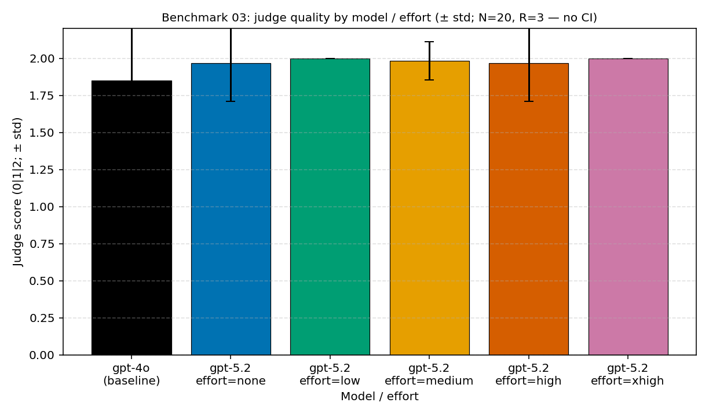

実験ノート · exp003 · ツール使用エージェント(Mixed case) · 推論が初めて割に合った場所
exp003 — ツールエージェントで推論努力度は割に合ったのか
文 Hyeonsang Jeon · Global Black Belt, Cloud & AI Apps
前の二つのベンチマークで、答えはいつも “努力度を上げるな” だった。今回は違った。ツールを呼び、その結果を受けてもう一度判断する混合タスク — 三つのベンチマークを通じて、推論が初めて、それもごく少し割に合った場所である。
私たちは事前登録で、中間の努力度(low–medium)がパレートの膝になるだろうと書いた。gpt-4o は無ツール·1ツールはできるがマルチツールのシーケンシングで崩れ、gpt-5.2 none は計画する推論表面がなくマルチツールで gpt-4o くらい弱く、high·xhigh は品質が飽和したまま些細なサンプルにツールを過剰に呼ぶだろう、と。
測定は半分は当たり、半分は驚きだった。low が本当に床だった — 今回だけは none ではなく。ところが gpt-4o が崩れた本当の場所はマルチツールではなく、ツールが要らない問題で計算機を呼んだところだった。このノートはその一日を設計 → 入力 → 成果物 → 予測対実測 → ツール濫用マップ → 判断として振り返る — 次の人が同じ道で迷いにくいように。
まず、10秒
結論を信じず、この実験だけを自分で実行してください
トークン消費は 0 です。以下の二行がこの実験の入力·変数·成果物をそのまま出力し、ツールループランナーの配線を dry-run で検証します。
# この実験の入力 → 変数 → 成果物カードを出力 (ネットワークなし)
python -c "import experiments; print(experiments.describe('exp003_benchmark03_gpt5_2.yaml').summary())"
# ツールループランナーを dry-run で配線だけ検証 (トークン消費 0)
python -c "import experiments; print(experiments.run('exp003_benchmark03_gpt5_2.yaml', dry_run=True, extra_args=['--max-samples','1']).ok)"実際の有料測定と集計·図表再生成コマンドは benchmarks/03-tool-using-agent/analysis.md の再現フッターに整理されています。
設計
今回はツールが登場する
問いは一つだ。 ツールを使うエージェントタスク — 現実に最も近い混合ケース — で、gpt-5.2 の努力度をどこまで上げれば推論が請求書に見合うのか。PAYG(正答当たりのドル)と PTU(固定容量当たりの分当たり正答)の二つのレンズで同時に見る。
データセット。 凍結した著作サンプル 20個(tu_01…tu_20)。三つの型が混ざっている — 無ツール 6個(知識/形式のみ)、1ツール 8個(計算機一つまたは検索一つ)、マルチツール 6個(検索 → 計算機へ 2–3回つながる鎖)。すべてのサンプルは検証可能な正答と、どのツールを呼ぶべきかについての expected_tool_calls 正答表を併せ持つ。
変わる軸は一つだけ — gpt-5.2 の reasoning.effort を none · low · medium · high · xhigh でスイープする。そこに推論パラメータのない gpt-4o ベースラインを横に置く。各 (サンプル × モデル × 努力度) セルは三回ずつ(R=3)繰り返し、ツールループは最大 4回反復(max_tool_iterations: 4)で切る。
事前登録予測
中間の努力度(low–medium)が混合タスクのパレートの膝である。gpt-4o は無ツール·1ツールはできるがマルチツールで壊れ、gpt-5.2 none はマルチツールで gpt-4o と同じくらい弱く、high·xhigh は品質が飽和したままツールだけを過剰に呼ぶ。
この実験の役割
短い事実回答の床(01)と多段階の天井(02)がどちらも “努力度を上げるな” で終わったあと、推論表面が実際に必要になる最小地点があるかを確認する混合アンカー。
入力と成果物
何を食べ、何を残したか
この実験が食べたものも残したものも、手書きの要約ではなくリポジトリの実ファイルです。だから入力から出力まで一行でたどれます。
入力 (in)
実験定義: experiments/exp003_benchmark03_gpt5_2.yaml, …_gpt4o.yaml.
データセット: benchmarks/03-tool-using-agent/dataset.json (SHA-256 で固定)。
プロンプト·ツール: システムプロンプトとツール設定をそれぞれ SHA-256 で指紋化 — 360セル全体に単一のシステムプロンプトとツール設定が使われたことを保証。
成果物 (out)
生呼び出し: runs/*.json (Foundry v1 ペイロード + 反復ごとの tool_calls 軌跡原文)。
採点: judge_runs/*.json (正答採点 + 別個のツール効率スコア)。
集計: analysis.json.
図表/表: results/cost-curves/benchmark-03-*.png·.csv.
測定表面は 360セル(gpt-4o 60 + gpt-5.2 300、努力度五段階)。外れ値として除外されたセルは1個(tu_18/low/r0)。採点は中立ジャッジ gpt-4o がセルごとに一回、360/360 成功。すべての JSON は実際の Azure Foundry v1 呼び出しで、"fixture": true マーカーは一つもない。ただし360セル中 12個(3.3%)がツールループ 4回の上限にかかり、ツールなしで最終答えを強制返却し、各行に tool_loop_terminated="iteration_cap" フラグが残っている。
予測対実測
予測は半分だけ当たった
何を予測したか
中間の努力度が膝である。gpt-4o はマルチツールで壊れる。gpt-5.2 none はマルチツールで弱い。要するに “混合タスクには少しの推論が必要だ。”
何が出たか
low が本当にパレートの膝だった — 今回だけは none ではなく。ところが gpt-4o が崩れた場所はマルチツールだけでなく無ツール(83.3%)だった。ツールが要らないのに計算機を呼んだ。
判定: 方向は確認、失敗モードは反転。 “混合タスクには最小限の推論表面が必要だ”という事前登録は支持された — low(none ではなく)が正答当たりのパレート最適である。ただし gpt-4o の弱点はマルチツールシーケンシングだけでなく、ツールを呼んではいけないときに呼ぶ習慣だった。予測の半分は当たり、半分はデータがより興味深い物語へ正した。
第一のシグナル
床は none ではなく low だった
下の表のドルは価格スナップショット pricing/azure-openai-payg-2026-05.yaml(アクセス日 2026-05-19)に方法論の PAYG 式を適用した値で、analysis.md §5 から再引用し、1,000件当たりに正規化した。
モデル 努力度 1,000リクエスト当たり 通過率 正答1,000件当たり
gpt-4o — $3.29 90.0% (54/60) $3.65 ← ベースライン
gpt-5.2 none $2.76 98.3% (59/60) $2.81
gpt-5.2 low $2.77 100% (60/60) $2.77 ← パレート最適
gpt-5.2 medium $2.89 98.3% (59/60) $2.94
gpt-5.2 high $3.18 98.3% (59/60) $3.23
gpt-5.2 xhigh $3.50 100% (60/60) $3.50正答 1,000件当たり low は $2.77 — gpt-4o($3.65) より 24% 安い。 そして gpt-4o の単価を下回って唯一 100% 通過に届いたセルである。none もすでにリクエスト当たりでは gpt-4o より約 16% 安いが(入力単価 $1.75/1M 対 $2.50/1M、ツールループでは入力が請求書を支配する)、マルチツールで一問を落とし 98.3% にとどまる。low が足したのは平均4トークンの推論表面だけだが、その小さな表面が通過率を 100% へ引き上げた(1,000リクエスト当たり +$0.011)。
前の二つのベンチマークでは none が床であり最適でもあった。ここで初めて床が一段上がった。混合の実作業には、正の最小努力度の床がある — 推論がついに、ごく少し割に合った。
none(98.3%)から low(100%)へ上がったあと平らで、gpt-4o ベースラインはその下の 90% 付近にある。本当の話はこの集計線ではなく、下の型別分解にある。出典: results/cost-curves/benchmark-03-quality.png.
ツール濫用マップ
gpt-4o はツールを呼びすぎた
90% という集計数字一つだけでは、“どこで”が見えない。型別に分けると、このベンチマークの中心的根拠が見えてくる。
モデル 努力度 無ツール(18) 1ツール(24) マルチツール(18)
gpt-4o — 83.3% 100% 83.3%
gpt-5.2 none 100% 100% 94.4%
gpt-5.2 low 100% 100% 100% ← パレート最適- 無ツール — gpt-4o が足を踏み外した場所。 gpt-4o はツールが要らないのに計算機を呼び、83.3% にとどまった。ジャッジは三件を “ルーブリックはツール呼び出し 0 を求めているのに、モデルがツールを呼んだ” として失敗処理した — “1+1” のようなプロンプトでも計算機を濫用したのである。gpt-5.2 は全努力度で 100%。
- 1ツール — 完全飽和。 すべての (モデル×努力度) セルが 100%。単一ツールディスパッチは、どちらの系列にも解けた問題である。
- マルチツール — 推論が助ける場所。 gpt-4o 83.3%、gpt-5.2
none94.4%、low100%。2–3回つながる鎖で、小さな推論表面が “計画して実行する” をより安定させる。gpt-4o → gpt-5.2lowの 16.7%p 上昇が、このベンチマークが捉えようとした実作業シグナルである。
ツール効率スコア(正答採点とは別に、軌跡を 0–1 で評価)も同じ方向だ。gpt-4o は 0.950 で最も低く、無ツールで計算機を濫用し、正答しても点を削られた。gpt-5.2 は low で 0.988 と頂点 — 通過率 100% を出したまさにそのセルである。
第二のシグナル
low を超えると同じ品質をより高く
low の上では、また前のベンチマークの話が繰り返される。medium は 1,000リクエスト当たり約 $0.13 を余分に使っても通過率が 98.3% へむしろ下がり、low にパレート劣後する。high は low 比でリクエスト当たり +14%、xhigh は +26% だが通過率はそのままだ(xhigh は 100% だが、正答当たりでは low より 26% 高い)。
遅延も同じ話だ。 none は gpt-4o よりむしろ 5% 速く(2,902ms 対 3,044ms)、low は +0.7% で実質平らだ。ところが high は +20.0%、xhigh は +23.9% へ開く。遅延に敏感なワークロードなら medium が現実的な天井である。
トークンを分解すると、このベンチマークだけの構造が見える。 リクエスト当たり入力が約 1,200–1,300トークンで請求書を支配する — システムプロンプトとツール定義がループの各反復で再び載るためだ。隠れた推論トークンは 0(none)から約 52(xhigh)へ増えるが、入力に比べれば小さい。推論トークンが xhigh コストを支配した多段階ベンチマーク(02)とは構造が反対である — むしろ入力が請求書を支配する点は短い事実回答ベンチマーク(01)に似ている。
PTU レンズでも結論は low に集まる。 low は gpt-4o の 0.939倍スループットだが、通過率 100% がこれをひっくり返し、分当たり正答 +4.3% である(gpt-4o は 90%)。スループット損失(−6.1% req/min)より通過率上昇(+10.0%p)が大きい。一方、努力度をさらに上げるとスループットだけが削られる(medium −8.5%、xhigh −10.8%)。PAYG(正答当たり最安)と PTU(分当たり正答最高)が同じ low を指す、二つのレンズの収束である。
透明性
数字に残った汚れまでそのまま
どんな測定も完全にきれいではない。このベンチマークが残した跡を消さず、そのまま書いておく — 隠すと次の人が同じ場所で踏み外すからだ。
- 外れ値 1件。
tu_18のlow1回目の反復がトークンで 3σ を超え、運用フラグも併せて持ったため集計から除外された(360セル中 1件 = 0.3%、方法論の警告線 10% を大きく下回る)。生 JSON ツリーにはそのまま残っている — 外れ値除外は集計マスクであって削除ではない。 - ループ上限 12件。 360セル中 12個(3.3%)がツールループ 4回の上限にかかり、ツールなしで答えを強制返却した。各行に
iteration_capフラグが残り、どのセルが上限に押されたかを追跡できる。 - 部分点は正答から除外。 ジャッジスコア 1(部分正答)は §7 に別途報告するが、正答当たりコストの分母からは外した — 本番規模でツールタスクの部分正答は正答ではないからだ。この二値化の選択を明示し、ヘッドラインがどう計算されたかを示す。
限界
どこまで信じられるか
この結果は、一つの混合ツールタスクセット、一つの価格スナップショット、特定のモデル組み合わせとルーブリックから出た小規模な集計値です。数字そのものより、方法を持ち帰るほうが安全です。
- 検索はモックである。 このベンチマークの
web_searchは実際のウェブ検索ではなく、固定知識ベース検索だ。ライブ検索は制御不能な分散を持ち込むため範囲外に置いた。ヘッドライン(小さな推論表面がマルチツール信頼性を上げる、low超過はトークンの無駄)はこの単純化に対して堅い。完全な再現ではなく、制御できるものだけを制御した場所である — その境界を隠さない。 - 標本。 N=20 · R=3。この標本サイズでは信頼区間や統計的有意性を主張しない — 方向性の結論は堅いが、絶対値の大きさは小標本として注意。
- 価格。 単一スナップショット。料率や使用量スキーマが変われば、同じ原資料からコストを再計算する必要がある。
- 採点。 LLM-as-judge(gpt-4o)。ジャッジプロンプト SHA-256 を採点 JSON に記録してドリフトを監視する。
- PTU。 スループットはトークンベースの推定であり、ライブ PTU 負荷テストではない。
だから何をデフォルトにするか
ツール使用エージェントのデフォルトは gpt-5.2 effort=low である — PAYG と PTU の両方で。正答当たり 24% 安く(gpt-4o 比)、分当たり正答 +4.3%、そしてマルチツール通過率を 83.3% から 100% へ引き上げる品質ボーナスまである。今回だけは none ではなく low が床である。しかし low の上では、また品質なしにコスト·遅延だけを足すだけだ。
つなぐ
次の人が迷いにくいように
根拠を記録する仕事は、数字を積むだけでは終わりません。どんな問いを立て、どんなプロンプトとツール設定を使い、どの価格スナップショットと標本を基準にしたのかまで残ってこそ、次の判断にもう一度使えます。だからこのノートは回顧とタイムラインへ戻ってつながります。
- 回顧本文 → 問いごとの回顧 Q3 — ツールエージェントには推論が多いほど安全かの中心的根拠がこの実験である。
- タイムライン → “ツールエージェントケース測定 — 意外な発見”項目がこの実験のツール濫用の瞬間である。
- 対になる実験 → exp002 — 多段階推論は
noneが床だった天井ケースだ。このノートと並べて読むと、床がなぜ一段上がったのかが見える。 - 実験カード → 入力/変数/出力の機械的な仕様は、リポジトリ
experiments/README.mdのexp003カードにある。
次の実験。 ここでの検索はモックで、PTU 数値はトークンベース推定である。次はライブ検索と実際の PTU 負荷テスト — レートリミットシェイピング·キューイング·並列バッチがツールループのスループットと信頼性にどう作用するかだ。
出典 · 根拠の境界
出典 & 根拠の境界
このノートも新しい測定なしに公開済みの集計を再引用した。検索をモックしたという限界まで、根拠と境界を下に置く。
- この実験の分析:
benchmarks/03-tool-using-agent/analysis.md(§3 プロベナンス, §4 トークン構成, §5 コスト, §6 消費モデル, §7 品質·型別, §8 遅延, §9 外れ値, §10 ツール効率, §11 結論)。すべての数値はここから再引用。 - 横断要約:
results/summary.md. - 方法論:
docs/05-methodology.md(変数·標本·キャッシュ·採点·コスト·再現·統計報告規約)。 - 価格:
pricing/azure-openai-payg-2026-05.yaml(Azure, アクセス日 2026-05-19)。 - 境界: N=20 · 信頼区間なし · 単一価格スナップショット · ジャッジ gpt-4o ·
web_searchは固定 KB モック · PTU はトークンベース推定(ライブ負荷ではない)。